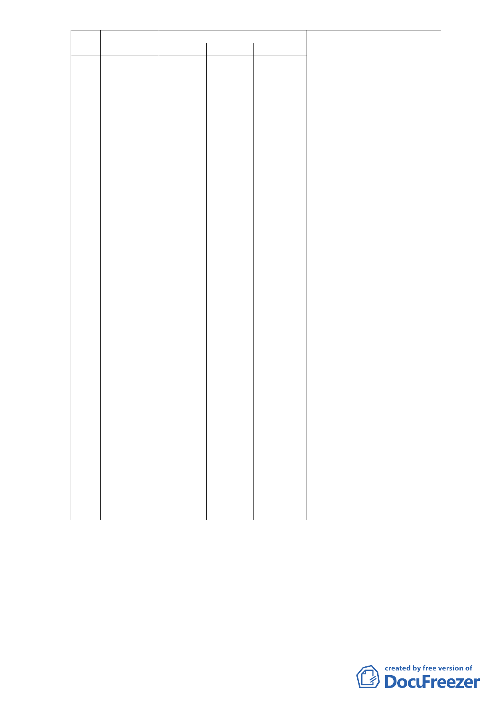

編號
3
4
5
位置
變更內容
原計畫 新計畫
計畫區中央 第三種商
商三(特) 業區(特)
公園用地
計畫區西北
側及東北側
商三(特)
第三種商
業區(特)
道路用地
計畫區臨福
德街 57 巷 公園用地 道路用地
側
面積(m2)
變更理由
河路側之可視性及可及性。
3. 公 園 位 置 配 合 可 體 驗 區 調
整，整體規劃設計，結合本計
畫公共及公益性空間，提供台
北市民特殊都市空間體驗。
4.公園位置配合可體驗調整留
設，有利縮短士林夜市-士林
3538
北投科技園區方向都市防災
疏散之可及性。
5.打通士林舊市區現有景點人
潮各自獨立，無法互相遊逛之
都市活動瓶頸，作到四通八
達，形塑對都市活動真正可用
的人行網絡開放空間系統。達
成全基地使用公共化目標。
1.本案申請單位以自行拓寬 1
公尺道路，調整西北側及東北
側都市計原道路(捐地)，由原
92 年 9 公尺計畫道路，調整
為 10 公尺計畫道路，自行吸
227 納週邊交通衝擊。
2.本次拓寬 10 公尺計畫道路部
份，由申請單位自行捐贈，超
出原 92 年都市計畫捐地 20%
部份，由申請單位自行捐贈提
供。
1. 本案申請單位以自行拓寬 1
公尺道路，調整西北側及東北
側都市計原道路(捐地)，由原
92 年 9 公尺計畫道路，調整
為 10 公尺計畫道路，自行吸
125 納週邊交通衝擊。
2.公園面積應依 92 年都市計畫
地籍分割割結果維持不變，配
合本次拓寬 10 公尺計畫道路
部份，由申請單位自行補足捐
地面積。
註：實際變更面積以地籍分割測量為準。
2.土地使用分區管制：
(1)使用強度：本計畫區建蔽率、容積率不得超過下表規定
- 28 -